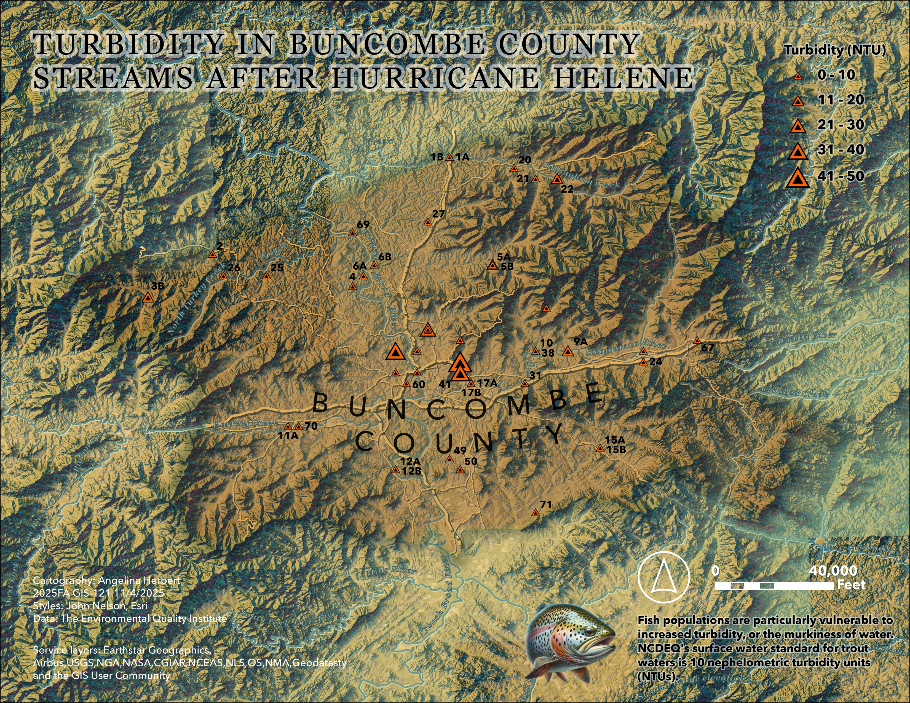

Sampling Sites
3B Sandymush Creek at Willow Creek Rd 2 Sandymush Creek at Leicester Hwy 36 Newfound Creek at Dark Cove Road 26 North Turkey Creek at North Turkey Creek Road 25 South Turkey Creek 11A Hominy Creek (location at S. Hominy confluence) 11B South Hominy Creek 37 Newfound Creek at Leicester Hwy 70 Pole Creek at Smoky Park Hwy 32 French Broad River at Walnut Island Park 4 Lower Newfound Creek 62 Smith Mill Creek @ Trading Post 69 N. Buncombe landfill creek at Alexander River Park 6A French Broad River at Ledges Park 14 Lower Flat Creek 28 Bent Creek below Lake Powhatan 59 Smith Mill Creek @ McKinnish Branch 6B Reems Creek at US 25/70 (near French Broad River) 52 Buttermilk Creek 57 Hominy Creek at Sand Hill Road 34 Lower Hominy Creek at SR 191 12A Bent Creek at SR 191 (at French Broad River) 12B French Broad River at Bent Creek 35 Smith Mill Creek at Louisiana Blvd 65 Nesbitt Academy stream 56 Lower Smith Mill Creek 60 Penland Creek (upper) 7A Reed Creek at UNCA Botanical Gardens 7B Glenn Creek at Reed Creek confluence 23 French Broad River at Jean Webb Park 53 Moore Branch 55 Lower Reed Creek 61 Penland Creek (lower) 63 Bacoate Branch 8 Beaverdam Creek at Beaver Lake 27 Flat Creek at US 19/23 39 South Creek at Beaver Lake 47 Reed Creek at entrance to UNCA 48 South Creek retention pond 51 Culvert leading into Beaver Lake Bird Sanctuary pond 54 Town (Nasty) Branch 64 Haith Branch (AB Tech) 13 French Broad River at Corcoran Park 66 Beaverdam Creek at Elk Mountain Scenic Highway 72 Tributary to Beaverdam Creek at Inglewood Rd 1A Big Ivy at Forks of Ivy 1B Little Ivy at Forks of Ivy 49 Dingle Creek at Ramble Way 40 Ross Creek at Lower Chunn's Cove Rd Bridge 41 Ross Creek at Tunnel Road 42 Ross Creek at Upper Chunn's Cove 43 Ross Creek at Swannanoa River 50 Dingle Creek at Overlook Rd 58 Little Branch Stream - Shiloh 17A Swannanoa River below South Tunnel Road 17B Haw Creek at Swannanoa River 5A Ox Creek at Reems Creek 5B Reems Creek at Ox Creek 16A Cane Creek at Mills Gap Road 20 Ivy Creek at Buckner Branch Road 30 Grassy Branch 31 Swannanoa River at Grassy Branch confluence 10 Bull Creek at Swannanoa River 21 Paint Fork at Ivy Creek confluence in Barnardsville 38 Swannanoa River at Bull Creek 71 Cane Creek at River Cane Dr 68 Shope Creek at Majestic Mountain Dr 22 Ivy Creek at Dillingham Road 9A Bee Tree Creek upstream from Owen Lake 9B Swannanoa River at Owen Park 15A Cane Creek at Hwy 74 15B Ashworth Creek at Cane Creek 24 Swannanoa River at confluence with North Fork 33 North Fork of the Swannanoa River at Grovestone Quarry 67 Swannanoa River downstream of Flat Creek
FiC